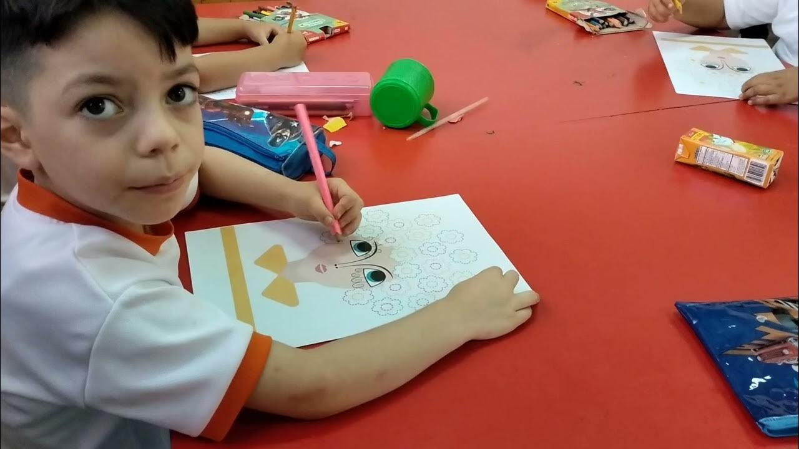

Análisis Pedagógico
El análisis pedagógico es esencial para garantizar que el software educativo cumpla con los objetivos de aprendizaje y se adapte a las necesidades de los estudiantes y docentes.
Evaluación pedagógica
La evaluación del software educativo debe considerar los aspectos pedagógicos, ya que estos factores son cruciales para determinar la efectividad y la calidad del software en el proceso de enseñanza-aprendizaje. Los elementos pedagógicos que deben ser evaluados incluyen la capacidad del software para facilitar la interacción y la comunicación entre los estudiantes y los contenidos educativos.
Además, es importante que el software pueda adaptarse a diferentes enfoques pedagógicos y metodologías de enseñanza. La evaluación de estos aspectos permite identificar y mejorar las características del software que mejor se alineen con las necesidades educativas y pedagógicas de los estudiantes y docentes.
Definición de objetivos y contexto
Se determina qué contenido se desea enseñar, a quién va dirigido y cuáles son las metas de aprendizaje que se deben alcanzar. También se estudia el contexto en el que se utilizará el software, ya sea en un aula, de forma individual o en entornos virtuales. Es fundamental porque establece la base pedagógica sobre la cual se construirá toda la herramienta.